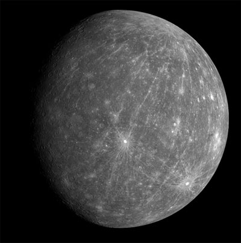
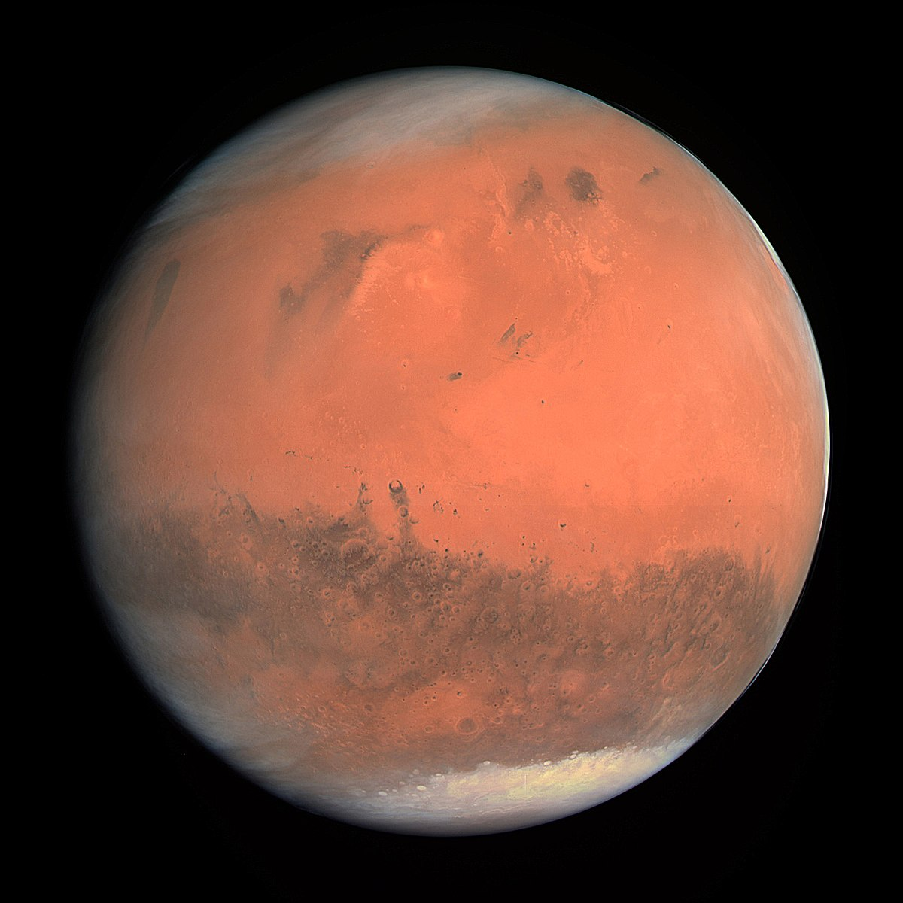
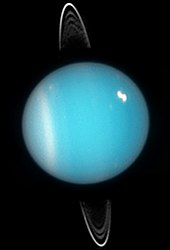

Solar system
Sun
 The Sun is the star at the center of the Solar System. It is a nearly perfect sphere of hot plasma, with internal convective motion that generates a magnetic field via a dynamo process.
The Sun is the star at the center of the Solar System. It is a nearly perfect sphere of hot plasma, with internal convective motion that generates a magnetic field via a dynamo process.
Moon
 The Moon is an astronomical body that orbits planet Earth, being Earth's only permanent natural satellite.
The Moon is an astronomical body that orbits planet Earth, being Earth's only permanent natural satellite.
Mercury
 Mercury is the smallest and innermost planet in the Solar System. Its orbital period around the Sun of 88 days is the shortest of all the planets in the Solar System. It is named after the Roman deity Mercury, the messenger to the gods.
Venus
 Venus is the second planet from the Sun, orbiting it every 224.7 Earth days. It has the longest rotation period of any planet in the Solar System and rotates in the opposite direction to most other planets. It has no natural satellites.
Venus is the second planet from the Sun, orbiting it every 224.7 Earth days. It has the longest rotation period of any planet in the Solar System and rotates in the opposite direction to most other planets. It has no natural satellites.
Earth
 Earth is the third planet from the Sun and the only object in the Universe known to harbor life. According to radiometric dating and other sources of evidence, Earth formed over 4 billion years ago.
Earth is the third planet from the Sun and the only object in the Universe known to harbor life. According to radiometric dating and other sources of evidence, Earth formed over 4 billion years ago.
Mars
 Mars is the fourth planet from the Sun and the second-smallest planet in the Solar System after Mercury.
Jupiter
 Jupiter is the fifth planet from the Sun and the largest in the Solar System. It is a giant planet with a mass one-thousandth that of the Sun, but two-and-a-half times that of all the other planets in the Solar System combined.
Jupiter is the fifth planet from the Sun and the largest in the Solar System. It is a giant planet with a mass one-thousandth that of the Sun, but two-and-a-half times that of all the other planets in the Solar System combined.
Saturn
Saturn is the sixth planet from the Sun and the second-largest in the Solar System, after Jupiter. It is a gas giant with an average radius about nine times that of Earth.
Uranus
 Uranus is the seventh planet from the Sun. It has the third-largest planetary radius and fourth-largest planetary mass in the Solar System.
Neptune
 Neptune is the eighth and farthest known planet from the Sun in the Solar System. In the Solar System, it is the fourth-largest planet by diameter, the third-most-massive planet, and the densest giant planet.
Neptune is the eighth and farthest known planet from the Sun in the Solar System. In the Solar System, it is the fourth-largest planet by diameter, the third-most-massive planet, and the densest giant planet.